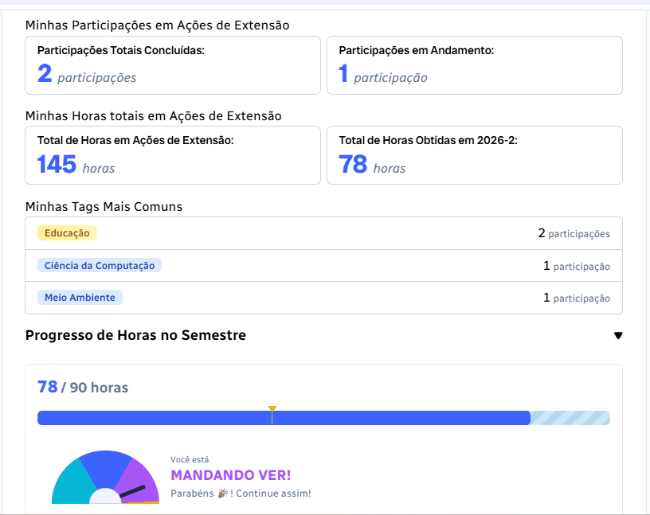
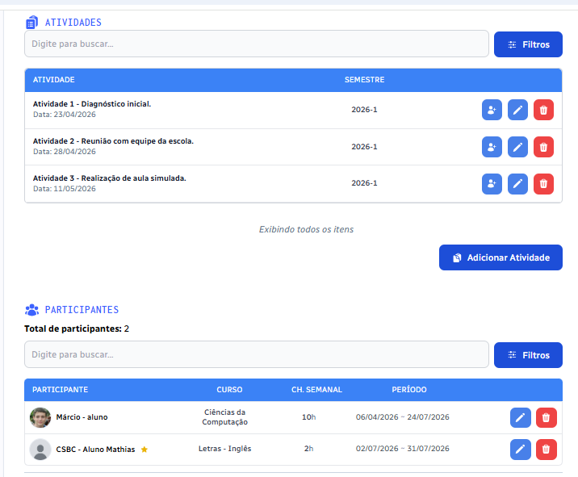
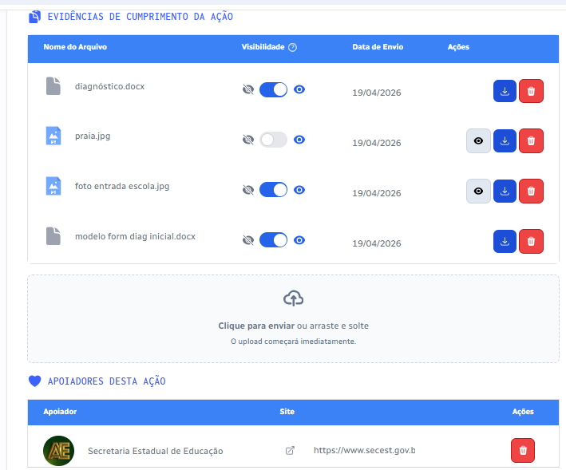

MaisAção: Tecnologia para a extensão universitária
Uma plataforma especializada para a gestão institucional da inserção curricular da extensão. Desenvolvida para apoiar Instituições de Ensino Superior a cumprir a carga horária mínima obrigatória da extensão curricularizada com transparência, agilidade e engajamento.
Marco Regulatório & Processos
Da Resolução 07/2018 ao acompanhamento institucional
Com a Resolução CNE/CES nº 7/2018, todos os cursos de graduação das IES precisam integrar em seus currículos ao menos 10% da carga horária em ações de extensão. O MaisAção unifica todas as etapas do fluxo em um ecossistema digital integrado:
- Demanda da Sociedade
- Ação de Extensão
- Participação Estudantil
- Horas & Evidências
- Gestão Institucional
- Indicadores & Comprovação
Interface & Usabilidade
Gestão, participantes, evidências e engajamento
Projetada para coordenadores, docentes, estudantes e gestores institucionais. O fluxo reúne registro ágil, organização da participação comunitária, envio de evidências e gamificação.



Materiais em Vídeo
Institucionais e Tutoriais da Plataforma
Assista às apresentações e conheça o funcionamento prático do MaisAção.
Certificação & Registro
Desenvolvido em PD&I, com registro no INPI
O MaisAção foi concebido e desenvolvido no âmbito de projeto de PD&I da Rede Nacional de Ensino e Pesquisa (RNP), em cooperação com instituições acadêmicas de excelência.
Comercialização Autorizada
Comercialização exclusiva homologada sob titularidade da RNP conforme documentação da Performatec.